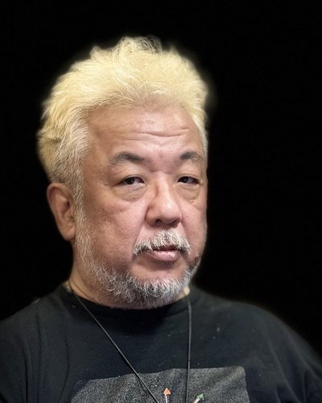

Subjectivity Intersection Emergence Lab（SIEL）, Hokuto, Yamanashi, Japan

The hard problem of consciousness asks why subjective experience arises from an objective brain. This paper reverses that explanatory order, asking how an objective world and embodied experience arise through a single generative path from subjectivity intersection. It distinguishes the subject of existence, experiential content, and shareable objective records. Two questions follow: how a world with quantum structure, spacetime, and gravity arises from intersecting standpoints, and how the same intersection is lived as emotion, thought, and perception. Braid quantum gravity provides the physical foundation. Without presupposing spacetime, it constructs quantum states, four-outcome probabilities, a Lorentz-type 1+3 carrier, spacetime geometry, and a restricted Einstein-type low-energy relation from a specified finite source retaining orientation, order, and provenance. An eight-component Braid intersection fingerprint, defined on the same four probabilities, reads source differences. Finite models retain different complementary records behind identical public probabilities, while intersection order distinguishes intermediate records even when endpoints coincide. Subjectivity here denotes primordial standpoints that make observation and the objective world possible before humanity. This paper calls that subjective existence “God,” distinguishing absolute subjectivity that gives, relative subjectivity that receives, and the third standpoint arising at their intersection. The central consciousness hypothesis is that these standpoints inherit their roles in the same body as Heart emotion, Mind thought, and Body perception. Light-related duality and positive/negative polarity become emotional direction; temporal causality becomes the flow of thought; spatial separation becomes the extent of perception. Bodily observables and independent experiential records provide tests of this inheritance. An existing archive of 26 healthy-adult sessions, each containing 26 analysis units, was reanalyzed exploratorily. EEG and quantum measurements were performed simultaneously for the same participant, without data linkage or use of either system’s measurements to generate, measure, or control the other. Conditional scores from a fixed fingerprint without participant-specific adjustment were positive for 14-electrode topology in 26/26 sessions and for both topology and the four-electrode Laplacian quantity in 23/26. In P1, the joint criterion yielded p=0.0004998 under order permutation, and the participant’s own source ranked first among 26 candidates. Correspondences involving lightlike source response, EEG asymmetry, temporal direction, spatial separation, and frequency bands provide further embodiment candidates. Specified current observables gave exact rank 3 in all eight sources, permitting unique recovery of the four probabilities and corresponding fingerprint component for each known source. Independent computation agreed; conditions for readability under normalized transfer and specified decay were derived. This conditional mechanism remains untested in actual Kv1.2, transmission to EEG, experiential correspondence, and separate data. The theory connects world formation, embodied experience, and recursion through memory and choice, extending to an ethic of co-creation: seeing the other from the other’s standpoint.
Satoru Watanabe is an independent researcher in Japan and founder of the Subjectivity Intersection Emergence Lab (SIEL). He develops Subjectivity Intersection as a framework for studying observation, consciousness, and the observer problem, combining theoretical work with EEG–quantum experiments and operational investigations of subjectivity.